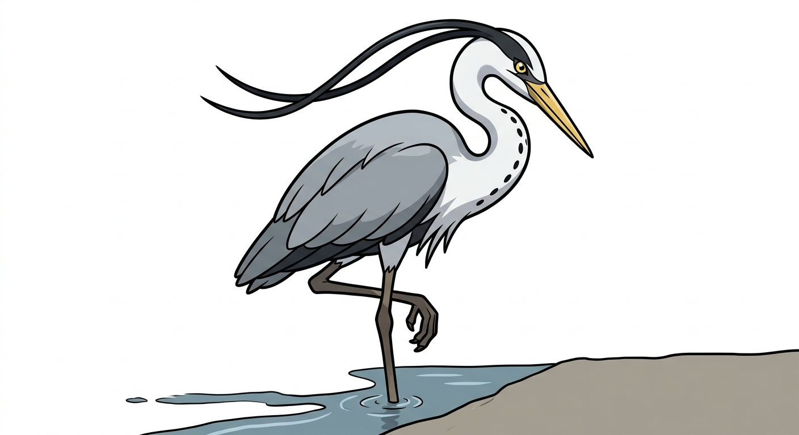

| Tipo | Volante Acqua |
|---|---|
| Abilità | Occhioroccia (prima) Immobile (speciale) |
| Sesso | 50% maschi · 50% femmine |
| Altezza | 1,0 m |
| Peso | 2,0 kg |
| Tasso di cattura | 3 (0,4%) |
| Uovo | Gruppi Volante e Acqua 1 20 cicli (min. 5120 passi) |
| Pokédex regionali | Martemon #011 |
| Tasso di allevamento | Lento |
| Esperienza base ceduta | 240 |
| Punti base ceduti | Totale: 3 — Attacco 3 |
| Colore Pokédex | Grigio |
| Affetto di base | 35 |
Martesairone è un Pokémon di tipo Volante/Acqua, forma finale della linea dell'airone della Martesana. È il Pokémon più raro della regione Martemon: in natura ne è stato censito uno solo.
Si evolve da Aironcello salendo di livello all'alba, a partire dal livello 30.
Martesairone è un airone adulto alto un metro, grigio cenere sul dorso e sulle ali, bianco sul collo e sul petto, con una striscia di macchie nere lungo la gola e il becco giallo, lungo e dritto come un pugnale. Il collo è ripiegato a esse e si distende solo al momento del colpo. Sulla nuca porta la lunga penna nera che è il tratto di famiglia arrivato a compimento: due piume sottili che gli scendono dietro la testa come un nastro, e che si alzano quando ha visto qualcosa. In volo tiene il collo raccolto e le zampe tese all'indietro, e le ali, aperte, sono larghe quasi due metri. Gli occhi sono gialli e fermi, e non sbattono mai.
Non vi sono differenze visibili tra maschi e femmine.
Immobilità totale, finché non è il momento. Martesairone sceglie un punto della riva e ci resta per ore, su una zampa sola, senza un movimento, grigio come il muro alle sue spalle: chi passa in bici lo supera senza vederlo, e se ne accorge solo dopo, per il dubbio. Poi qualcosa si muove sotto l'acqua, il collo si distende e il colpo di becco è la cosa più veloce di tutto il dex. Non si fa avvicinare da nessuno e non si fa catturare: chi ci ha provato racconta di averlo visto aprire le ali, fare tre battute lente e posarsi cento metri più in là, nello stesso identico atteggiamento, come se non fosse successo niente. Se un Aironcello sbaglia il colpo per la decima volta, lui non si volta nemmeno. Ma il giorno dopo il giovane pesca meglio.
Il tratto della Martesana tra Turro e Greco, gli ultimi chilometri di canale a cielo aperto prima della Cassina de' Pomm. Sempre lo stesso esemplare, sempre lo stesso ramo: la gente del quartiere lo chiama per nome e non gli si avvicina, per rispetto e perché tanto non serve.
Pesci, rane, qualche piccolo roditore di riva. Non manca un colpo: aspetta, e quando colpisce ha già preso. In una giornata gli bastano tre o quattro pesci, e il resto del tempo lo passa a guardare la Martesana come se fosse sua. Lo è.
Il tipo Volante/Acqua toglie le debolezze all'Erba e al Ghiaccio, ma raddoppia quella all'Elettro: quattro volte. Con i PS che ha, un Fulmine basta. È la sua unica vera paura, ed è per questo che non pesca mai durante i temporali.
Un attaccante fisico di precisione: Attacco a 125, Velocità a 90 e una buona Difesa Speciale, con PS bassi per un Pokémon di questo livello. Non è un tank e non regge un cambio: aspetta con Appostamento, colpisce con Baldeali o Beccata d'Acqua, e si ritira con Trespolo. Con Immobile, ogni colpo che incassa da fermo lo rende più pericoloso.
| Lv. | Mossa | Tipo | Cat. | Pot. | Prec. | PP |
|---|---|---|---|---|---|---|
| Evo. | Appostamento | Volante | Stato | — | —% | 5 |
| Inizio | Beccata | Volante | Fisico | 35 | 100% | 35 |
| Inizio | Ruggito | Normale | Stato | — | 100% | 40 |
| 6 | Pistolacqua | Acqua | Speciale | 40 | 100% | 25 |
| 10 | Attacco d'Ala | Volante | Fisico | 60 | 100% | 35 |
| 14 | Localizza | Normale | Stato | — | —% | 5 |
| 18 | Beccata d'Acqua | Acqua | Fisico | 70 | 100% | 15 |
| 22 | Agilità | Psico | Stato | — | —% | 30 |
| 26 | Aeroassalto | Volante | Fisico | 60 | —% | 20 |
| 30 | Perforbecco | Volante | Fisico | 80 | 100% | 20 |
| 35 | Cascata | Acqua | Fisico | 80 | 100% | 15 |
| 41 | Appostamento | Volante | Stato | — | —% | 5 |
| 47 | Baldeali | Volante | Fisico | 120 | 100% | 15 |
| 54 | Trespolo | Volante | Stato | — | —% | 5 |
| 62 | Idropompa | Acqua | Speciale | 110 | 80% | 5 |
| Mossa | Tipo | Cat. | Pot. | Prec. | PP |
|---|---|---|---|---|---|
| Protezione | Normale | Stato | — | —% | 10 |
| Volo | Volante | Fisico | 90 | 95% | 15 |
| Surf | Acqua | Speciale | 90 | 100% | 15 |
| Sostituto | Normale | Stato | — | —% | 10 |
| Riposo | Psico | Stato | — | —% | 5 |
Il grassetto indica una mossa che ha il bonus di tipo (STAB) quando viene usata da un Martesairone. Beccata d'Acqua è la mossa di famiglia della linea: un colpo di becco sull'acqua che ha priorità +1 se chi la usa non ha attaccato nel turno precedente. Chi sta fermo, colpisce per primo.
Appostamento è la mossa esclusiva di Martesairone. Tipo Volante, categoria Stato, 5 PP. Martesairone si immobilizza e per quel turno non fa nulla: nel turno successivo il suo primo attacco è un brutto colpo garantito e non può mancare il bersaglio. Se subisce un colpo mentre è in appostamento, con l'abilità Immobile l'Attacco sale di un livello. È il modo in cui pesca, e il modo in cui combatte: aspettare è la mossa.
Versione Lambro — Sceglie un punto della riva e ci resta per ore, su una zampa, grigio come il muro. Chi passa lo supera senza vederlo e se ne accorge solo dopo, per il dubbio.
Versione Martesana — Ne è stato censito uno, sempre sullo stesso ramo tra Turro e Greco. Nessuno è mai riuscito ad avvicinarlo, e nessuno ha mai visto sbagliare un colpo.
L'ora in cui il Naviglio è ancora suo. Tra le sei e le otto del mattino la ciclabile della Martesana è vuota: qualche corridore, un cane, il primo tram su via Padova che si sente da lontano. L'acqua è ferma, il canale riflette i palazzi e la luce arriva bassa da est, lungo la direzione del Naviglio. È l'ora in cui l'airone cenerino, che non si mostra mai di giorno, sta sulla riva a pescare; e chi si alza presto lo sa, e cammina piano. Gli aironi cenerini in Lombardia nidificano nelle garzaie di pianura, lontano dalla città, e arrivano in città solo per l'acqua: la Martesana, con i suoi pesci e i suoi tratti tranquilli, li porta fin dentro Milano. Martesairone è quello che non se n'è più andato.
Martesairone è l'airone cenerino (Ardea cinerea) adulto, uno degli uccelli più grandi della pianura: alto quasi un metro, con un'apertura alare che può arrivare vicino ai due metri, il collo che in volo tiene ripiegato e la lunga penna nera sulla nuca. Caccia stando immobile nell'acqua bassa e colpendo con il becco in un lampo, ed è per questo che il concept è tutto sulla pazienza: la mossa esclusiva è aspettare. In città è tornato negli ultimi decenni, e sulla Martesana è raro abbastanza da essere un evento.
Martesairone fonde Martesana e airone: l'airone della Martesana, che è come lo chiama chi lo ha visto.
Il nome giapponese, マルテサギ Marutesagi, unisce マルテザーナ Marutezāna ("Martesana") e 鷺 sagi ("airone").
| Lingua | Nome | Origine |
|---|---|---|
| Giapponese | マルテサギ Marutesagi | Da Marutezāna e sagi. |
| Inglese | Martesairone | Uguale al nome italiano. |
| Francese | Martesairone | Uguale al nome italiano. |
| Spagnolo | Martesairone | Uguale al nome italiano. |
| Tedesco | Martesairone | Uguale al nome italiano. |